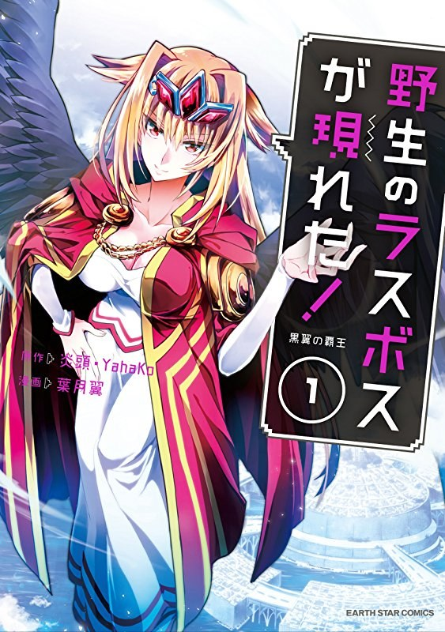

Recomendaciones de Mangas
Yasei no last boss ga arawareta!
- Nombre alternativo: A wild last boss appeared!
- Nombre de Autor: Hazuki Tsubasa
- Cantidad de capitulos: 40 y en emisión
- Cantidad de tomos: 8 tomos recopilatorios y en publicación
Sin traducción oficial hasta el momento
Nuestro protagonista era el mejor jugador de un juego online, su personaje Lufasu Mafaalu no tenía rival. Un día luego de terminar un evento en el que su personaje fue derrotado por la unión de 7 jugadores de alto nivel, fue transportado a un mundo muy similar al del juego. El jugador masculino se encuentra de forma inesperada dentro del cuerpo de la gran Lufasu Mafaalu, antiguamente conocida como Soberana de Alas Negras, y 200 años han pasado desde la lucha con los llamados 7 héroes. Ahora nuestro protagonista viajará por este mundo de fantasía mientras es innecesariamente temido por el mundo e innecesariamente venerado por sus antiguos subordinados.
Kaminaki Sekai no Kamisama Katsudo
- nombre alternativo: 神無き世界のカミサマ活動
- Nombre de Autor: Aoi Akashiro
- Cantidad de capitulos: 23 y en emisíon
- Cantidad de tomos: 5 tomos recopilatorios y en publicación
Sin traducción oficial hasta el momento

Yukito, el hijo de un sospechoso líder de una secta, pierde la vida durante el peligroso rito de la secta y reencarna en otro mundo. Allí, es salvado por los habitantes de una remota aldea y vive felizmente con ellos. Sin embargo, la aldea es un lugar para aquellos que han sido calificados como "anormales" por el Estado Imperial. Los "anormales" son aquellos que tienen "miedo a la muerte". La gente del Reino Imperial carecía del sentido del "miedo a la muerte". Finalmente, los "anormales" iban a ser ejecutados bajo el sistema de "Condena". Yukito intenta desesperadamente salvar a los habitantes de la aldea, pero es incapaz de hacerlo. En ese momento, "Mitama", el dios del culto del que formaba parte Yukito, es convocado a este otro mundo... ¿Será capaz Yukito de sobrevivir en este otro mundo?
Game of Familia: Kazoku Senki
- nombre alternativo: Game of Familia –A Family's War Chronicles–
- Nombre de Autor: Yamaguchi Mikoto
- Cantidad de capitulos: 34 y en emisión
- Cantidad de tomos: 7 tomos recopilatorios y en publicación
Sin traducción oficial hasta el momento
Mi padre se volvió a casar. Y ahora tengo familiares que no están relacionados por la sangre. Son tres mujeres extremadamente buenas y poderosas. Sin embargo, hay dos problemas serios, es decir, Mi padre murió de una enfermedad tres meses después del matrimonio, y luego los cuatro restantes fuimos convocados a un mundo diferente! ! ¡Involucrándonos en la guerra de este mundo mundo, y así comenzó la historia de la familia que salvó el mundo!
One Puch-Man
- Nombre alternativo: ワンパンマン
- Nombre de Autor: ONE
- Cantidad de capitulos: 192 y en emisión
- Cantidad de tomos: 23 tomos recopilatorios y en publicación
Traducción oficial en Argentina por Panini

¡Sigue la vida de un héroe promedio que gana todas sus peleas con un solo puño! Esto le causa un montón de frustración, ahora ya no siente la adrenalina y la emoción de una dura pelea. Tal vez ese riguroso entrenamiento para volverse fuerte no valió la pena. Después de todo, ¿qué tiene de bueno tener un poder tan aplastante?
Ninkyou Tensei - Isekai no Yakuza-Hime
- Nombre alternativo: Yakuza Reincarnation - Yakuza Princess of Another World
- Nombre del Autor: Miyashita Hiroki y Natsuhara Takeshi
- Cantidad de capitulos: 19 y en emision
- Cantidad de tomos: Solo 1 tomo hasta el momento
Sin traducción oficial hasta el momento
Un yakuza de la vieja escuela, Nagamasa Ryumatsu, terminó perdiendo la vida debido a ciertas circunstancias. Pero, cuando despertó a un extraño tipo de paisaje que nunca había visto antes, descubrió que de alguna manera se había convertido en una hermosa niña.
Shuumatsu no Valkyrie
- Nombre alternativo: Record of Ragnarok, 終末のワルキューレ, Valkyrie of the End, World's End Valkyrie
- Nombre del Autor: Umemura Shinya y Fukui Takumi
- Cantidad de capitulos: 50 y en emision
- Cantidad de tomos: 11 tomos recopilatorios y en publicacion
Traducción oficial en Argentina por Ivrea

Shuumatsu no Valkyrie es una historia de fantasía que comienza cuando los Dioses se reúnen con el objetivo de decidir si la humanidad debe vivir o morir. Y aunque llegan a la conclusión de que debe perecer, una Valkyria propone que Dioses y humanos luchen una última vez para tomar tan difícil decisión. Así, 13 humanos pelearán contra 13 Dioses para resolver el destino de la humanidad.